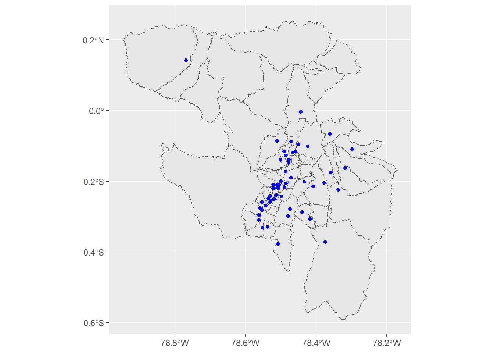

7.0.1 Guía de Estudiante: Operaciones con Datos Espaciales Vectoriales usando sf
7.0.1.1 Introducción
En esta sección, exploraremos las operaciones con datos espaciales vectoriales utilizando la librería sf en R. Explicaremos detalladamente las funciones empleadas en las clases y actividades, describiendo sus argumentos y los tipos de objetos que requieren. Esta guía está diseñada para proporcionar una comprensión profunda de cómo manipular y analizar datos espaciales vectoriales.
7.0.1.2 Funciones Básicas de sf
7.0.1.2.1st_read()
La función st_read() se utiliza para leer archivos espaciales y convertirlos en objetos sf. Acepta diferentes formatos de archivos, incluidos shapefiles (.shp).
library(sf)
Linking to GEOS 3.11.2, GDAL 3.8.2, PROJ 9.3.1; sf_use_s2() is TRUE
Reading layer `LIMITE_PROVINCIAL_CONALI_CNE_2022' from data source
`C:\Users\alex_ergostats\Documents\geo_stats_2024_nb\data\shp\LIMITE_PROVINCIAL_CONALI_CNE_2022.shp'
using driver `ESRI Shapefile'
Simple feature collection with 25 features and 2 fields
Geometry type: MULTIPOLYGON
Dimension: XY
Bounding box: xmin: -732167.8 ymin: 9445216 xmax: 1147852 ymax: 10189370
Projected CRS: WGS 84 / UTM zone 17S
Argumentos: - dsn: La ruta al archivo o base de datos. - layer: El nombre de la capa si el archivo contiene múltiples capas.
7.0.1.2.2st_as_sf()
La función st_as_sf() convierte un objeto de datos tabulares (data.frame o tibble) en un objeto espacial sf.
library(readxl)library(tidyverse)
── Attaching core tidyverse packages ──────────────────────── tidyverse 2.0.0 ──
✔ dplyr 1.1.2 ✔ readr 2.1.4
✔ forcats 1.0.0 ✔ stringr 1.5.0
✔ ggplot2 3.5.0 ✔ tibble 3.2.1
✔ lubridate 1.9.2 ✔ tidyr 1.3.0
✔ purrr 1.0.2
── Conflicts ────────────────────────────────────────── tidyverse_conflicts() ──
✖ dplyr::filter() masks stats::filter()
✖ dplyr::lag() masks stats::lag()
ℹ Use the conflicted package (<http://conflicted.r-lib.org/>) to force all conflicts to become errors
library(sf)# Importar datos tabuladosmetro_data <-read_excel("../data/Metro_quito_usuarios_enero_2024.xlsx")# Convertir datos tabulados en objeto sfmetro_sf <-st_as_sf(metro_data, coords =c("Long", "Lat"))
Argumentos: - x: El objeto a convertir. - coords: Un vector de nombres de las columnas que contienen las coordenadas.
7.0.1.2.3st_crs()
La función st_crs() establece o recupera el sistema de referencia de coordenadas (CRS) de un objeto sf.
# Asignar un sistema de referencia de coordenadas geográficas (EPSG 4326)st_crs(metro_sf) <-4326
Argumentos:
x: El objeto sf.
value: El CRS a asignar.
7.0.1.2.4st_transform()
La función st_transform() transforma las coordenadas de un objeto sf a un nuevo sistema de referencia de coordenadas (CRS).
# Transformar a un sistema de coordenadas proyectado (WGS84 UTM 17S EPSG 32717)metro_32717 <-st_transform(metro_sf, 32717)
Argumentos:
x: El objeto sf a transformar.
crs: El nuevo CRS (puede ser un código EPSG o una definición de PROJ4).
7.0.1.2.5st_union()
La función st_union() combina múltiples geometrías en una sola geometría.
# Disolver este shapeshp_disuelto <-st_union(shp)
Argumentos:
x: El objeto sf que contiene las geometrías a unir.
7.0.1.2.6st_simplify()
La función st_simplify() reduce la complejidad de las geometrías, eliminando vértices innecesarios.
Warning: st_centroid assumes attributes are constant over geometries
Argumentos:
x: El objeto sf que contiene las geometrías.
Argumentos:
x: El primer objeto sf.
y: El segundo objeto sf con los atributos a unir.
join: El tipo de unión (por defecto es st_intersects).
7.0.1.2.8sf_use_s2()
La función sf_use_s2() controla si las operaciones geométricas en sf utilizan la biblioteca s2.
# Desactivar el uso de s2 para cálculos de geometría en sfsf_use_s2(FALSE)
Spherical geometry (s2) switched off
Argumentos:
use_s2: Un valor lógico que indica si se debe usar s2 (TRUE o FALSE).
7.0.1.3 Ejemplo Completo: Transformación y Visualización de Datos Espaciales
A continuación, presentamos un ejemplo completo de cómo leer, transformar y visualizar datos espaciales utilizando las funciones de sf y ggplot2.
library(sf)library(tidyverse)library(readxl)# Desactivar el uso de s2 para cálculos de geometría en sfsf_use_s2(FALSE)# Leer los datos espacialesdatos <-read_sf("../data/shp/BC001_MERCADO_PLATAFORMA_A.shp")# Leer el archivo Excel con las administraciones zonales y sus parroquiasadmin_zones <-read_excel("../data/Administraciones_Zonales_Parroquias.xlsx")# Leer los límites de las parroquiasdatos_limites <-read_sf("../data/shp/PARROQUIAS_REF.shp")# Unir los datos de los límites con las administraciones zonalesdatos_limites <- datos_limites %>%inner_join(admin_zones)
Joining with `by = join_by(dpa_parroq, dpa_despar)`
# Calcular los centroides de los datos de mercadospuntos <- datos %>%st_centroid()
Warning: st_centroid assumes attributes are constant over geometries
Warning in st_centroid.sfc(st_geometry(x), of_largest_polygon =
of_largest_polygon): st_centroid does not give correct centroids for
longitude/latitude data
# Visualizar los límites de las parroquias y los puntos de los mercadosdatos_limites %>%ggplot() +geom_sf() +geom_sf(data = puntos, color ="blue")

7.0.1.4 Conclusión
En esta sección, hemos explorado varias funciones de la librería sf para manipular y analizar datos espaciales vectoriales. Desde la lectura de archivos espaciales hasta la transformación de sistemas de referencia de coordenadas y la simplificación de geometrías, estas herramientas te permitirán realizar un análisis espacial detallado y efectivo en R.